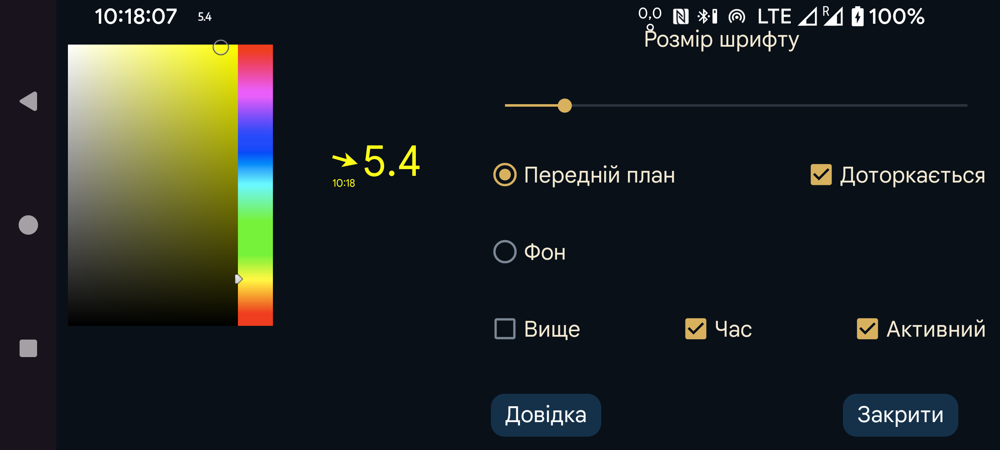

ar be de es fr hi it ja nl pl ru tr uk uz zh en
Тут можна налаштувати розмір шрифту, колір тексту й тла плаваючого значення глюкози.
Доторкається: коли параметр увімкнено, плаваюче значення можна переміщати пальцем і зменшувати тривалим натисканням без руху. Коли його вимкнено, дотики передаються вікну під плаваючим значенням, тому програмою під ним можна користуватися. Зробити плаваюче значення недоступним для дотиків можна також подвійним торканням .
Прозорий: невидиме тло.
Вище: залишати плаваюче значення видимим, навіть коли Juggluco на передньому плані.
Час: часова позначка значення глюкози.
Активний: увімкнути.
Параметр «Плав. глюкоза» можна вмикати й вимикати через ліве середнє меню→Плавати.
Перейти до Juggluco можна, торкнувшись сторони зі стрілкою плаваючого вікна. Подвійне торкання сторони зі значенням глюкози робить вікно недоступним для дотиків. Тривале натискання значення глюкози залишає лише маленьке число, щоб можна було взаємодіяти з елементами під ним. Торкніться маленького вікна, щоб знову його збільшити. Рух пальця по стороні зі значенням переміщує плаваюче вікно.
Для відображення поверх інших програм Juggluco потрібен спеціальний дозвіл. На Wear OS і Android Automotive його слід надати через adb:
adb shell pm grant tk.glucodata android.permission.SYSTEM_ALERT_WINDOW
На деяких годинниках, наприклад TicWatch Pro, дозвіл також можна надати в Android/Wear OS: Налаштування→Програми й сповіщення→Відомості про програму→Juggluco→Додатково→Показ поверх інших програм.